Tópico 2: Meios de Transporte; Família; Rotina e Hábitos – Em Casa
3.1 Daily Routines
Rosa está em um processo de adaptação ao novo lar, com outros moradores e em outro país. Durante o café da manhã, ela conversou com Christine e compararam seus hábitos e rotinas diárias. Acompanhe essa conversa e conheça algumas daily activities (atividades diárias) e home chores (tarefas domésticas):
Rosa: Good morning Christine!
Christine: Good morning dear! Do you want cereal for breakfast?
Rosa: I’d love that! How often do you have breakfast?
Christine: Sometimes, when I don’t have a shower, I have time for breakfast. Do you always have a shower in the morning?
Rosa: Oh yeah. I normally have the same routine: I wake up, take a shower, get dressed and brush my teeth. Then, I make my bed and I usually have breakfast at about 9. After that I leave home and take the bus to school.
Christine: Wow! And do you keep the same routine on the weekend?
Rosa: Hardly ever! On the weekends I rest… I often sleep late, read a book, surf the net or exercise. I also do the laundry. I cook a special dish for dinner too.
Christine: Mmm delicious. Brazilian food I suppose. Please, invite me!
Rosa: Of course! And you? Do you cook?
Christine: No, I don’t. I usually eat at restaurants. I don’t like washing the dishes and cleaning the kitchen…
Rosa: I Know… home chores are boring. But necessary.
Christine: That´s for sure!
3.2 Daily Activities
Qual é a primeira coisa que você faz ao acordar? Qual é a última coisa que você faz antes de dormir? É normal que, ao longo da vida, algumas rotinas próprias sejam criadas, seja por necessidades básicas, seja por personalidade. Veja a seguir como falar sobre algumas ações cotidianas.
3.3 Home chores
Além das atividades de rotinas, temos outras relacionadas à rotina da casa. Veja algumas delas a seguir:
 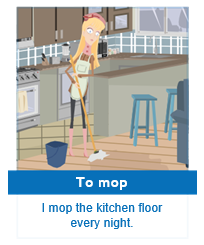
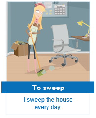
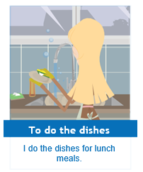
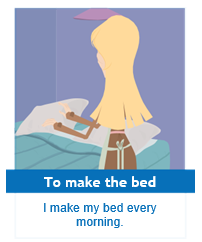
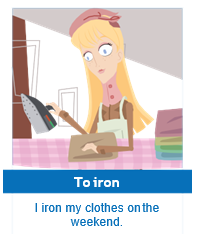
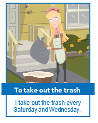
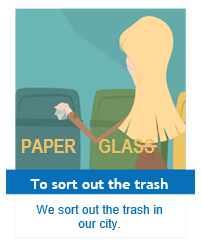
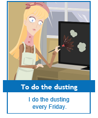
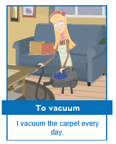
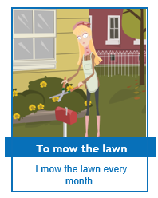
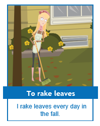
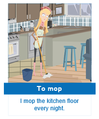
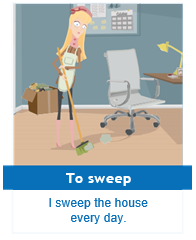
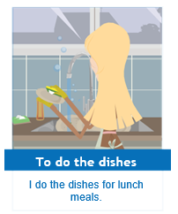
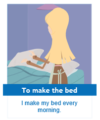
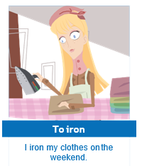
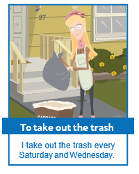
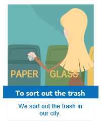
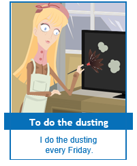
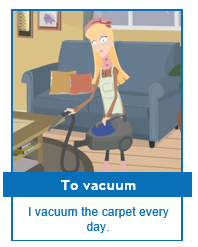
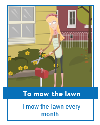
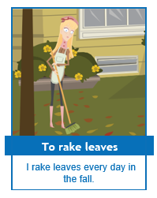
3.4 Present Simple - daily Activities
Para falar de situações que normalmente acontecem no dia a dia utilizamos o Present Simple. Você estudou anteriormente o uso do verbo Have nesse tempo verbal. Veja a seguir outras situações comuns em que o Present Simple é aplicado:
- Hábitos:
I eat only vegetables and fruit. (Eu como apenas vegetais e frutas)
- Rotina:
I always drink a glass of water in the morning. (Eu sempre bebo um copo de água pela manhã)
- Fatos que quase sempre são verdadeiros:
Women work more than men. (Mulheres trabalham mais que os homens)
- Verdades universais:
Water freezes at 0ºC. (Água congela à 0ºC)
Na conversa entre Christine e Rosa, você acompanhou as garotas contando um pouco sobre seus cotidianos. Veja a seguir o que diz Rosa:
I wake up, take a shower, get dressed and brush my teeth. Then, I make my bed and I usually have break fast at about 9.
Perceba que os verbos Wake up, Take, Get, Brush, Make e Have não sofreram nenhuma alteração em relação a sua forma base, ou seja, permaneceram no infinitivo sem a partícula "To“. Isso acontece porque eles estão conjugados na primeira pessoa do singular – "I“. A mesma regra se aplica a you, we ou they.
Observe a conjugação dos verbos a seguir com os respectivos pronomes:
| SUBJECT PRONOUN | WAKE UP | BRUSH |
|---|---|---|
| I | wake up | brush |
| You | wake up | brush |
| We | wake up | brush |
| They | wake up | brush |
Rosa conta à Christine um pouco sobre suas home chores no Brasil. Christine também fala um pouco de sua rotina. Acompanhe o diálogo e perceba o uso dos verbos:
Christine: So, Rosa... tell me a little bit about your home chores in Brazil. Who is responsible for the dishes?
Rosa: Well, I wash the dishes every day after lunch. You remember that I have a sister, right? We usually clean our bedroom on Fridays and take out the trash.
Christiane: That’s great, you share the chores.
Rosa: Yes, we all help. My parents, for example, they always sort out the trash and mow the lawn.
Christine: Just like my parents!
Rosa: And you, €hristine, tell me about your routine.
Christine: Well, as you know, I always get up at six o’clock and exercise. Then I take a shower and read the local newspapers. I want to get a job as a journalist.
Rosa: Yeah, good luck!
Christine: After that, Dube and I sometimes have lunch downtown. I usually do my chores in the evening.
Rosa: But you never make your bed before lunch.
Os exemplos apresentados até agora são de frases afirmativas. Para fazer uma negação no Present Simple é preciso lembrar um detalhe que você já estudou no módulo anterior: o uso de don’t. Confira na tabela:
| Affirmative | Negative |
|---|---|
| I wash the dishes every day after lunch. | I don’t wash the dishes every day after lunch. |
O que você precisa fazer é colocar o auxiliary verb do + not formando don’t e posicioná–lo antes do verbo. Veja mais alguns exemplos a seguir:
| Negative Sentences | Frases negativas |
|---|---|
| I don’t read the local newspapers. | Eu não leio os jornais locais. |
| You don’t make your bed before lunch. | Você não faz sua cama antes do almoço. |
| We don’t have lunch downtown. | Nós não almoçamos no centro da cidade. |
| They don’t have lunch at home. | Eles não almoçam em casa. |
Para formar frases interrogativas, também se utiliza o verbo auxiliar Do, porém, nessa situação, o auxiliar é colocado no início da frase, antes do sujeito. Observe:
| Interrogative sentences | Frases interrogativas |
|---|---|
| Do I need to study for the test? Yes, you do. |
Eu preciso estudar para a prova? Sim, você precisa. |
| Do you read the local newspapers? Yes, I do. |
Você lê os jornais locais? Sim, eu leio. |
| Do they sort out the trash? No, they don’t. |
Eles separam o lixo? Não, eles não separam. |
| Do we have lunch downtown? Yes, you do. |
Nós almoçamos no centro da cidade? Sim, vocês almoçam. |
Perguntas que são respondidas com Yes ou No, são chamadas de yes/no questions. Em geral, costumamos responder:
| Yes, (I) do. | No, (I) don't. |
Apesar de yes/no questions serem bastante utilizadas, existe um outro tipo de interrogative sentences, as wh-questions. A tabela a seguir retoma e amplia algumas question words utilizadas neste tipo de pergunta:
| Wh-Questions | Informação requisitada |
|---|---|
| When? | Tempo |
| Where? | Lugar |
| Who? | Pessoas |
| Why? | Razão (because) |
| How? | Maneira |
| Which (one)? | Escolha entre alternativas |
| What? | Objeto/idea/ação |
| Whose? | Posse (de quem) |
| How often? | Frequência |
As wh-question são formadas pela question word seguida do auxiliar Do ou Does. A estas perguntas não podemos responder simplesmente com "Yes, (I) do" ou "No, (I) don’t". Veja na tabela o modo correto de responder a esse tipo de pergunta:
| Wh-Question + Do | Answers |
|---|---|
| When do you read the localnewspapers? (Quando você lê os jornais?) |
I read the local newspapers in the morning. (Eu leio os jornais locais de manhã.) |
| What time do you get up? (Que horas você se levanta?) |
I get up at six o’clock. (Eu levanto às seis horas.) |
| Where do you have lunch? (Onde você almoça?) |
I have lunch downtown. (Eu almoço no centro da cidade.) |
Em inglês, perguntas do tipo:
- Com quem você estuda?
- Para onde você vai?
- Para que são essas coisas?
Apresentam uma ordem distinta da que utilizamos no português, ou seja, as preposições (with, to, for) vão para o final da frase. Veja na tabela:
| Questions | Answers | Português |
|---|---|---|
| Who do you live with? | With friends. | Comquem você mora? Com amigos. |
| Who do you study with? | With Betsy. | Com quem você estuda? Com Betsy. |
| Where do you go to? | To the pub. | Para onde você vai? Ao pub. |
| What do you use this rope for? | To exercise. | Para que você usa essa corda? Para exercitar-me. |
| What do you have this extra cell phone for? | To call my family in Brazil. | Para que você tem este celular extra? Para ligar para minha família no Brasil. |
No módulo anterior, você estudou que há uma pequena diferença na conjugação dos verbos quando usados com he, she e it. Veja:
| I have one sister. | Eu tenho uma irmã. |
| He has four brothers. | Ele tem quatro irmãos. |
Seguindo a mesma regra, que em he, she e it os verbos são conjugados de uma maneira diferente, observe como se formam as frases afirmativas, negativas e interrogativas no Present Simple para a terceira pessoa do singular.
Acompanhe o que Rosa e Christine comentam sobre o amigo Carlton
Rosa: I am curious, what does Carlton do at the pub, exactly?
Christine: Well, he cleans the tables and at the end of his shift he always sweeps and mops the floor.
Rosa: Does he cook?
Christine: No, he doesn’t. He doesn’t cook and he doesn’t prepare drinks. Sometimes he does the dishes. In the fall he usually rakes the leaves, but he doesn’t mow the lawn.
Rosa: Oh, I’m crazy about the fall!
Perceba que, no final dos verbos Clean, Sweep, Mop, Do e Rake , foi colocada a letra "s“. Entretanto, para alguns verbos, dependendo da terminação pode ser necessário colocar "es“ ou ainda, cortar a letra final do verbo.
Veja a seguir algumas regras que dão conta destes casos:
- Verbos terminados em s, sh, z, x, o acrescentamos es:
| press | pressees |
| brush | brushes |
| wash | washes |
| watch | watches |
| do | does |
| relax | relaxes |
- Verbos terminados em vogal + y acrescentamos s:
| play | plays |
| pray | prays |
| say | says |
- Verbos terminados em consoante + y acrescentamos ies e cortamos o y.
| try | tries |
| cry | cries |
| study | studies |
| fly | flies |
- Os outros verbos, com exceção do Have, que fica Has, são apenas acrescidos de s.
| get dressed | gets dressed |
| iron | irons |
| exercise | exercises |
Quando sua intenção for criar frases negativas ou interrogativas, use o verbo auxiliar Does. E, neste caso, uma coisa é fundamental: o verbo principal não terá o "s“ que você acabou de ver. Isto porque ele só é colocado no final do verbo em frases afirmativas.
Leia e pratique sua pronúncia, repetindo as frases:
Carlton does not cook. CORRECT
Carlton does not cooks. WRONG
Carlton does not prepare drinks. CORRECT
Carlton does not prepares drinks. WRONG
Então, não se esqueça de que, além de tirar o "s“ do verbo principal das frases afirmativas, o Does pode ser contraído junto ao not e ficar Doesn’t.
Para as frases interrogativas, o auxiliary verb Does é colocado antes do sujeito. Veja:
| Interrogative sentences | Short answers |
|---|---|
| Does Carlton clean the tables? | Yes, he does. |
| Does Carly clean the bathroom? | Yes, she does. |
| Does Christine get up at seven o’clock? | No, she doesn't. |
3.5 How often do you…? - adverbs of frequency
Na imagem a seguir, veja os adverbs of frequency.
Observe as frases a seguir. Perceba que os adverbs of frequency ficam imediatamente após o sujeito e antes do verbo:
Christine usually eats at restaurants.
Onde:
Christine = Subject;
usually = Adverb and;
eats = verb
Rosa often sleeps late on weekends.
Rosa always takes a shower in the morning
Christine sometimes takes a shower in the morning.
Christine never cooks.
Quando a frase é negativa, o advérbio localiza–se após o auxiliar (don't ou doesn't) e antes do verbo principal:
My friends and I don't usually go to the movies.
Carlton doesn't always cook.
No entanto, quando usamos adverbs of frequency com o verb To be a posição muda, ou seja, eles são colocados depois de am, is e are. Veja mais exemplos a seguir:
| English | Português |
|---|---|
| Doing the dishes is sometimes fun. | Lavar a louça, às vezes, é divertido. |
| Cleaning the windows is normally tiring. | Limpar as janelas normalmente é cansativo. |
| Public toilets are frequently dirty. | Banheiros públicos são frequentemente sujos. |
Além dos adverbs of frequency, podemos usar outras expressões que indicam a quantidade de vezes que algo é ou foi realizado. Observe:
| English | Português |
|---|---|
| once (a day, a year, a month...) | uma vez (por dia, por ano, por mês...) |
| twice | duas vezes |
| three times | três vezes |
| four times | quatro vezes |
| every day | todos os dias |
| every month | todos os meses |
| every year | todos os anos |
| every morning | todas as manhã |
| every night | todas as noites |
Perceba que essas expressões localizam–se no final da frase. Veja nos exemplos a seguir:
| Rosa brushes her teeth three times a day. |
| Christine makes phone calls to her family once a week. |
| Rosa presses snooze every morning. |
Agora veja como perguntar com que frequência uma ação é realizada. Para isso, utilizamos a expressão How often combinada com a estrutura das interrogative sentences do Present Simple. Observe os exemplos a seguir:
| How often do you go to college? | I go to college every day! |
| How often does your pet have a bath? | My pet has a bath once a week. |
| How often do you and your friends go to the movies? | We often go to the movies every night. |
Com este conteúdo é possível que você consiga indicar com que frequência executa uma determinada ação.
3.6 Material Complementar - meals
Os americanos e, em geral, os países de língua inglesa, possuem três refeições básicas. Acompanhe a seguir algumas informações sobre esse assunto.
As palavras que designam o ato de tomar café da manhã, almoçar e jantar são, respectivamente have breakfast, have lunch e have dinner. Quando estamos nos referindo ao verbo, usamos sempre have na frente.
Por exemplo, se você quiser dizer que almoça em casa o certo é I have lunch at home e não I lunch at home.
Se o have não for usado, então as palavras breakfast, lunch e dinner designam as meals (refeições).
Breakfast: refere-se à refeição que fazemos ao acordar pela manhã. Se você pensar nas palavras break, que significa intervalo, e fast, que significa jejum, pode entender que breakfast é a refeição que interrompe o nosso jejum da noite (por isso refere-se à refeição matinal).
Lunch: esta refeição é mais leve, informal e rápida nos países de língua inglesa. E ocorre perto do horário do meio-dia (noon).
Dinner: esta é considerada a refeição principal, onde a família costuma estar reunida e há uma maior variedade de alimentos além de maior tempo dedicado à refeição. Ela acontece during the evening.
Supper: algumas pessoas fazem uma última refeição próxima à hora de dormir ou substituem o dinner por uma refeição mais leve, o nome dado a esta refeição é supper.
3.7 Resumo e glossário
Glossary
Want: querer
Breakfast: café da manhã
Sometimes: às vezes
To take a shower: tomar banho
Always: sempre
Normally: normalmente
To brush (my) teeth: escovar (meus) dentes
To make (my) bed: arrumar (minha) cama
To leave home: sair de casa
To keep: manter
Hardly ever: quase nunca
To sleep (late): dormir (até tarde)
To exercise: fazer atividades físicas
To cook: cozinhar
To suppose: deduzir
Dish: prato (de comida)
To wake up: acordar
To go to bed: ir para cama
To fall asleep: pegar no sono
To sleep: dormir
To get dressed: vestir–se
To take the bus: pegar o ônibus
To read a book: ler um livro
To write a letter: escrever uma carta
To watch TV: assistir TV
To listen: escutar
To listen to music: escutar música
To exercise: exercitar–se
To surf the net: Navegar na internet
To clean: limpar
To mop: esfregar
To sweep: varrer
To do the dishes: lavar a louça
To make the bed: fazer a cama
To iron: passar roupa
To take out the trash: levar o lixo pra fora
To sort out the trash: separar o lixo
To do the dusting: tirar o pó
To vacuum: aspirar o pó
To mow the lawn: cortar grama
To rake leaves: varrer folhas
Never/Not ever: nunca
Rarely/Seldom: raramente
Occasionally: ocasionalmente
Periodically: periodicamente
Often/Frequently: frequentemente
Regularly: regularmente
Usually/Generally: geralmente
Normally: normalmente
Always: Sempre
Constantly: constantemente
Continually: continuamente
To make a phone call: Fazer uma ligação telefônica/ligar/telefonar
To have breakfast/to have lunch/to have dinner: tomar café da manhã/almoçar/jantar
To play (musical instruments)/ To play(with a doll) / To play games: tocar (instrumentos musicais), brincar (de boneca) ou jogar (jogos)